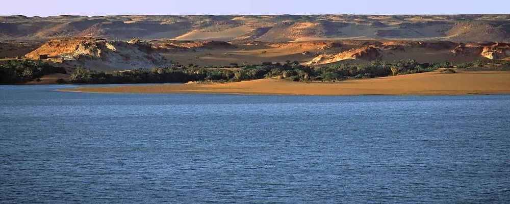

ABOUT BORNO STATE
Located in north-east geopolitical zone of Nigeria, Borno State was created out of the defunct North Eastern Nigeria in 1976 and it is divided into twenty seven local government areas which include Abadan, Askira-Uba, Bama, Bayo, Biu, Chibok, Damboa, Dikwa, Gubio, Guzamala, Gwoza, Hawul, Jere, Kaga, Kala/Balge, Kukawa, Konduga, Kwaya-Kusar, Mafa, Maiduguri, Magumeri, Marte, Mobbar, Monguno, Ngala, Nganzai and Shani
HISTORY
The area known as Borno State today was originally part of the defunct North Eastern State which was one of the twelve states initially created in 1967. The old state was later divided into two by late General Murtala Muhammed’s regime in 1976 and this brought about Borno State. Borno State known as ‘Home of Peace’ occupies the greater part of the Chad Basin and it is dominated by the Kanuri ethnic tribes. The State is known for its peaceful and hospitable nature despite its diverse differences in terms of history, religion, culture and languages amongst others.The area known as Borno State today was originally part of the defunct North Eastern State which was one of the twelve states initially created in 1967. The old state was later divided into two by late General Murtala Muhammed’s regime in 1976 and this brought about Borno State. Borno State known as ‘Home of Peace’ occupies the greater part of the Chad Basin and it is dominated by the Kanuri ethnic tribes. The State is known for its peaceful and hospitable nature despite its diverse differences in terms of history, religion, culture and languages amongst others
PEOPLE & CULTURE
Borno State has an estimated population of about 4,151,193 as at 2006 and population density of approximately 60 inhabitants per square kilometer. Borno State is quite heterogeneous with dominant ethnic groups such as the Kanuris (inhabit Abadam, Mobbar, Gubio, Guzamala, Kukawa, Nganzai, Monguno, Marte, Ngala, Kaka-Balga, Dikwa, Bama, Konduga, Mafa, Kaga, Magumeri, Damboa and Maiduguri LGAs. Other ethnics groups are Shuwas (known as the Arabs inhabit Mafa, Jere, Marte, Monguno, Dikwa, Ngala, Kala-Balge, Bama and Koguda LGAs), Hausas (Askira, Maiduguri LGAs), Babur-Bura (Biu, Hawul, Kwaya-Kusar, Bayo, and Shani LGAs). Mandara (Gwoza LGA), Chibok (Chibok LGA), Ngoshe, Guduf, Tera and Fulani languages are Kanuri, Shuwa, Guduf, Marghi, Babur, Fulani, Waha, Hausa. Most inhabitants of the state are farmers producing crops such as millet, rice, cassava, date palms, fruits, vegetables, sorghum, wheat, sweet potato, sugarcane, groundnut, cotton etc.
GEOGRAPHY
Located within latitude 10 N and 14 N and longitude 11 30 E and 14 45 E, Borno State which has an area of 61, 435sq. km shares borders with Republic of Niger to the north, Republic of Chad to the northeast and Cameroon Republic to the east. It also share borders with Adamawa State to the south, Gombe State to the southwest and Yobe State to the west.